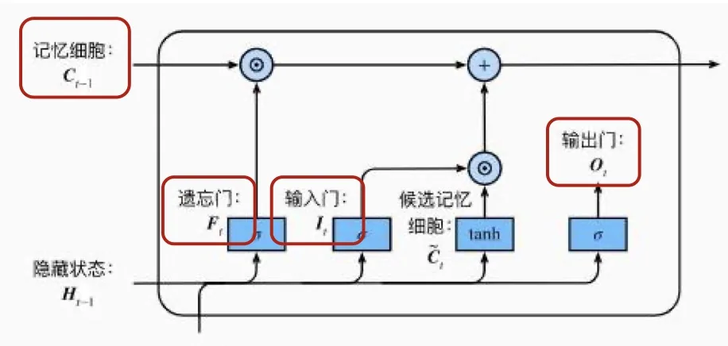
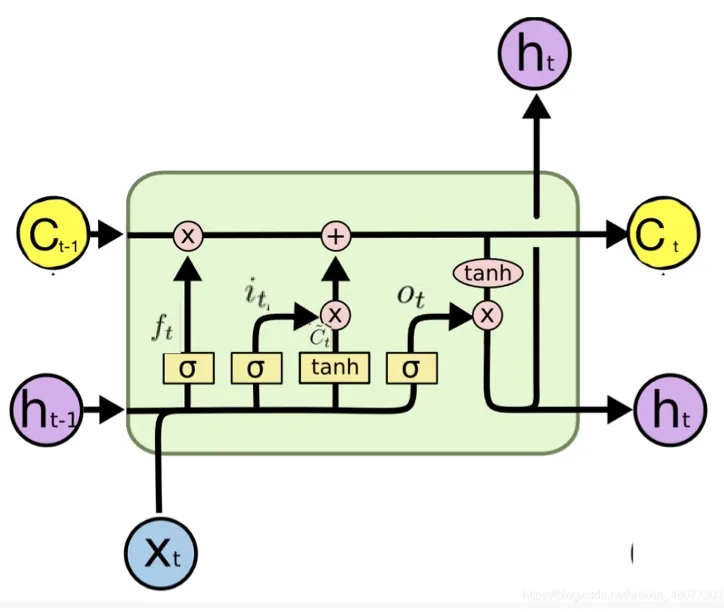
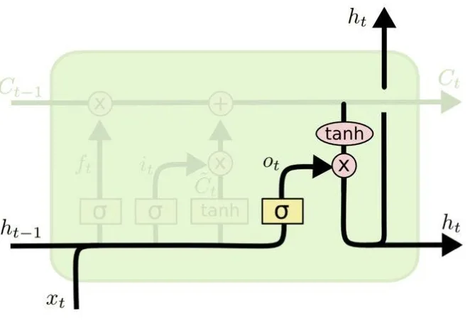

计算机视觉 · 第 7 章 循环神经网络
7.6 长短期记忆网络 LSTM
上一节把出路指向了门控机制，本节讲其中最有名的一个：长短期记忆网络（Long Short-Term Memory，LSTM）。它的思路是给网络配一份专门的「长期账本」——内部状态 ct，让信息沿一条线性的通道传递，再用三扇门（遗忘门、输入门、输出门）决定往里写什么、从里面删什么、往外读什么。本节先讲它为什么能缓解梯度消失，再逐个讲清三扇门各自管什么。
1. 短期记忆加上长期记忆
课件对 LSTM 的定位只有一句话，但把动机说得很清楚：RNN 由于梯度消失的原因只能有短期记忆，LSTM 通过精妙的门控制将短期记忆与长期记忆结合起来，并在一定程度上解决了梯度消失问题。
对照 7.5 节的分析就能理解这句话的分量：梯度消失的根源是隐状态之间的每一次传递都要乘上一个矩阵和一次激活函数的导数，距离一长就衰减殆尽。LSTM 的办法是另开一条通道，让「记忆」在其中以近似线性的方式传递，从而绕开连乘带来的衰减。这条通道就是内部状态 ct。
（补充一条课件之外的背景：这一结构由 Hochreiter 与 Schmidhuber 在 1997 年提出，是循环神经网络发展史上被引用最多的工作之一。）
2. 内部状态与外部状态
LSTM 的单元里同时存在两个状态，课件对它们的分工有明确说明：内部状态 ct 专门进行线性的循环信息传递，同时非线性地输出信息给隐藏层的外部状态 ht。也就是说，ct 负责「记」，ht 负责「用」。

课件进一步说明：ct 记录了到当前时刻为止的历史信息，而在每个时间点，都可以通过调节权重去修正 ct 的状态。这份「历史账本」并不直接对外露面，它要经过一次非线性变换才变成对外可见的隐藏状态 ht。图 1 的图例也交代了读图方式：方块表示全连接层和激活函数，圆圈里的运算符表示按元素运算，带箭头的连线表示信息的流向。
3. 三扇门与两条更新公式
接下来是最核心的部分。LSTM 在每个时刻都会算出三个门的输出和一个候选状态，再用它们更新内部状态与隐藏状态。

课件在这里给出了三个门的记号——ft 是遗忘门的输出，it 是输入门的输出，ot 是输出门的输出，而 c̃t 是通过非线性得到的候选状态。它们共同构成两条更新公式：
- 内部状态：ct = ft ⊙ ct−1 + it ⊙ c̃t；
- 外部状态：ht = ot ⊙ tanh(ct)。
第一式是 LSTM 的关键：它在 ct−1 与 ct 之间建立了一条「乘一个系数再加一项」的通路，而不是像简单 RNN 那样每次都过一遍权重矩阵和激活函数。正是这条平缓的通道让梯度可以传得更远。第二式则说明内部状态要先经过 tanh 压到 −1 到 1 之间，再按输出门的比例对外输出。
（1）遗忘门：决定 ct−1 忘掉多少
遗忘门控制上一时刻的内部状态 ct−1 需要遗忘多少信息，它的输出是 ft = σ(Wfxt + Ufht−1 + bf)。
因为 σ 是取值在 0 到 1 之间的 sigmoid 函数，ft 的每一个分量都可以读作「这一维的历史信息保留多少」：接近 1 就几乎全留，接近 0 就基本清空。它乘在 ct−1 上，起到的是「按比例遗忘」的作用。
（2）输入门：决定新的信息写进去多少
输入门控制当前时刻的候选状态 c̃t 有多少信息需要保存，输出为 it = σ(Wixt + Uiht−1 + bi)。
与遗忘门对称，它决定「新内容写多少进去」。而候选状态本身由 tanh 生成：c̃t = tanh(Wcxt + Ucht−1 + bc)。一个负责「内容」，一个负责「比例」，两者相乘再与保留下来的旧内容相加，就得到了新的内部状态。
（3）输出门：决定对外说出多少
输出门控制当前时刻的内部状态 ct 有多少信息需要输出给外部状态 ht，其输出为 ot = σ(Woxt + Uoht−1 + bo)，于是 ht = ot ⊙ tanh(ct)。这一扇门把「内部记了什么」与「此刻要对外表现什么」分开：账本可以记得很满，但对外只说当前该说的部分。

三扇门合起来看，LSTM 的每一步都在做三次「按比例取舍」：先决定旧账忘多少，再决定新账记多少，最后决定此刻对外报多少。这三处的比例都由当前输入和上一时刻的隐藏状态共同算出，因此是随内容而变的——这正是门控比固定结构更灵活的地方。
本节小结
- LSTM 的动机：简单 RNN 因梯度消失只有短期记忆，LSTM 用门控把短期记忆与长期记忆结合起来，在一定程度上解决了梯度消失问题。
- 两个状态分工不同：内部状态 ct 专门做线性的循环信息传递，记录到当前时刻为止的历史信息；外部状态 ht 由 ct 非线性变换后对外输出。
- 两条核心公式：ct = ft ⊙ ct−1 + it ⊙ c̃t 与 ht = ot ⊙ tanh(ct)，其中 ⊙ 表示按元素相乘。
- 三扇门各司其职：遗忘门 ft = σ(Wfxt + Ufht−1 + bf) 控制 ct−1 忘掉多少；输入门 it = σ(Wixt + Uiht−1 + bi) 控制候选状态 c̃t = tanh(Wcxt + Ucht−1 + bc) 保存多少；输出门 ot = σ(Woxt + Uoht−1 + bo) 控制 ct 有多少输出给 ht。
- 门的值由 sigmoid 给出，落在 0 到 1 之间，可以读作「通过比例」：0 表示完全阻断，1 表示完全放行。